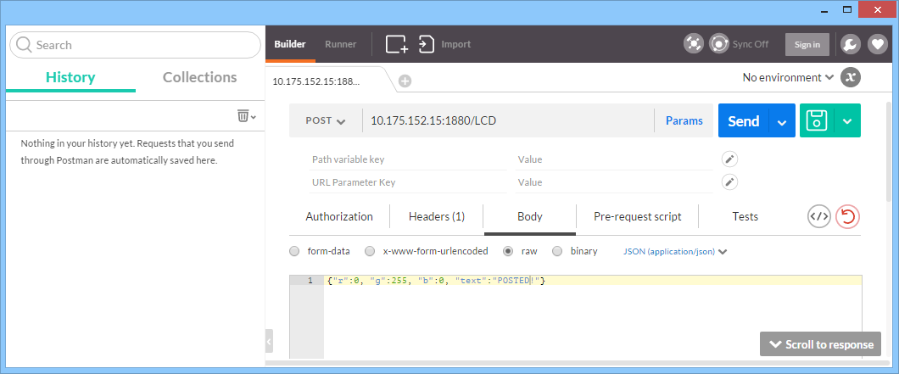

Node-Red Flow: HTTP POST to LCD screen
Create Node-RED flow that controls the LCD screen with a web request.
In this exercise, you will create a restful HTTP API to control an actuator (LCD Screen) deployed on an edge network. Use the http node to create a flow that controls the LCD with web requests.
Create Node-RED Flow
Use the input http, debug, grove-lcd, and http response nodes to create the flow below:

The input http node will listen to a request sent to a specific URL on the local host on port 1880. Once a request is recived this node will pass the payload to the debug colsole, Grove LCD node, and http response node. The http response node will send a response to the sender of the request to let it know that the message was recieved. Double click the input http node to configure it:

For this example use POST as the method and /LCD as the URL.
Install Postman
To send web requests to the Intel Edison we will be using Postman, a Chrome app designed to send web requests.

To install the app navigate to https://www.getpostman.com , Select Chrome App, and install it following the directions given.
Use Postman to send web request
Once Postman is installed launch it from the Google Apps Launcher.

Select post from the dropdown menu and enter the IP address of your Intel Edison port 1880 with the URL specified above. In this case it is "10.175.152.15:1880/LCD". The Grove LCD node requires a specific message to change the backlight color and display text. The message must be a JSON with the structure: {"r":r_val,"g":g_val,"b":b_bal,"text":"text to print"} where r_val, g_val, and b_val are the red, green and blue color values from 0-255. This structure is also specified in the grove-lcd node info tab.
To have Postman send a request with this syntax slect the "Body" tab, click the "raw" radial button, and select JSON from the dropdown menu. Now enter the JSON specifed above entering the color values and message you wish to display. When you are ready hit "Send".

If everything has worked properly your LCD should change to the color specifed and display your text. Also the debug tag will show the message that was recieved, or any errors that were encountered.
Overview of Restful API for controlling the LCD Screen
You have created the restful API for:
POST /LCD - which allows you to comtrol the text and backlight.
In the following step you will add the following restful APIs:
- GET /lcd/backlight - Retrieves the current status of the LCD backlight
- DELETE /lcd/backlight - Turns the LCD backlight off
- GET /lcd/text - Retrieves the current status of the LCD text
- DELETE /lcd/text - Turns the LCD text off